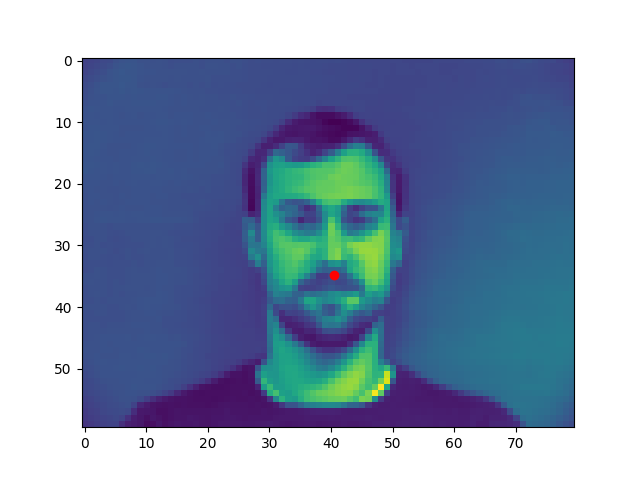
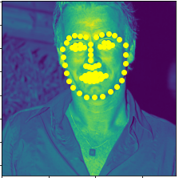

Facial Keypoint Detection with Neural Networks
CS194-26 Proj #4 : Face Morphing, Ken Guan
In project 3, we implemented a smooth, beautiful face morphing algorithm that works on almost any two faces. However, each face image requires a tedious process of manually labelling facial keypoints. In this project, we automate this process with CNNs.
To get a toy model, we first train a network that predicts the person's nose tip position given a photograph. This network takes the down-sampled 80*60 grayscale images as input and outputs the (x, y) coordinate prediction. It has three Convolutional Layers followed by three Fully Connected Layers.
Some sampled inputs from the Dataset. Red points are the ground truth points.

The network takes about 20 seconds to train locally for 25 epochs with batch size of 1. Here are the loss graphs:
Left: Train Loss
Right: Validation Loss
Note that the MSE losses are calculated in the unit of actual pixels on the image. The scale may look different if we calculate loss in the [0, 1] ratio space instead.
The error graph indicates (roughly) that the average error is between 3 to 4 pixels for the whole dataset. In reality, the error is skewed by a few extreme outliers. For the following, the left and middle photo comes from training set, while the right photo comes from validation set. Red points are ground-truth while yellow are predictions.


The following are some outliers:


The majority of the outliers are tilted faces with the ground-truth nose tip quite far from the geometrical center of the 2-D face. We see that the network's predictions tend to be too close to the center.
This model is more sophisticated than the toy model above because it now predicts 58 different facial keypoints. For this reason, we performed data augmentation, used larger input images and a deeper architecture. We used photos of size 240*180 and applied 5 Convolutional Layers before 2 Fully Connected Layers.
Some sampled inputs from the Dataset. Some are shifted horizontally. Some are slightly rotated. Red points are the ground-truth labels.


The network takes a little more time to train locally for 25 epochs with batch size of 1. It is considerably slower but still managable. Here are the loss graphs:
Left: Train Loss
Right: Validation Loss


(Aside: the loss graphs may indicate that the learning rate is a bit too high. However I wasn't able to get better results by tuning down learning rate.)
Similar to above, the MSE losses are calculated in the unit of actual pixels on the image. The scale may look different if we calculate loss in the [0, 1] ratio space instead.
For the following, the left and middle photo comes from training set, while the right photo comes from validation set. Red points are ground-truth while yellow are predictions.


The following are some outliers:


Many of the outliers are from the augmented inputs which are shifted from the center. The predictions seem to still stick to the center in some cases. Also, the predicted face outline consistently tilts toward the right. This could be due to that more images were rotated to the right during augmentation.
A visualization of first-layer kernels:

The other layers have too many kernels, so they are not visualized here.
For this part, we used the ResNet18 Architecture from Torch's library. We changed the input dimension to match 224*224 and the output dimension to predict 68 pairs of coordinates. Here's an image (from the internet) explaining its architechture:

Kaggle Username: Ken Guan. Score: 9.93902
A few images from the test set:

Loss plot; left is training loss, right is validation loss:
A visualization of first-layer kernels: